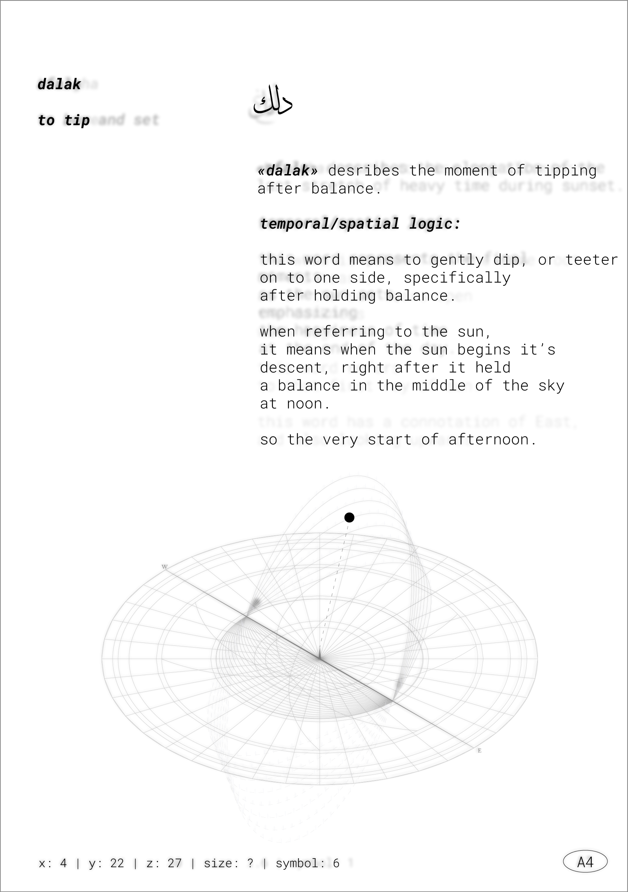
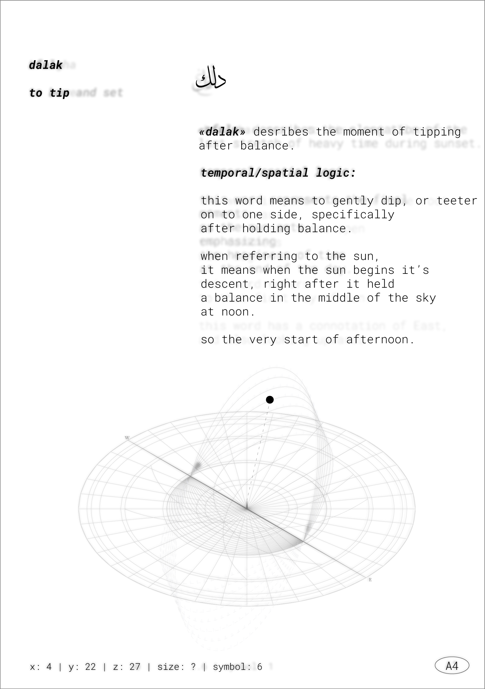

a year of computational design
(what i learned at the m.s.cdp program at Columbia University)
this year has been a whirlwind of learning, growth, and exploration into the frustrating and wonderful world of computation. i’ve been fortunate to work with incredible instructors: and peers, and this is a collection of some of my favorite projects.
i came in with a clear goal.
summer was for temporal explorations,
fall was for computational experimentation,
and spring was to merge the two, creating my thesis project,
resistant atlas.
i’m excited to share my work with you.
In summary, my technical skill set includes both frontend and backend development, using Python and
JavaScript. This website, for example, was built entirely from scratch using
code.
many of the projects below include parametric and algorithmic design using Grasshopper for Rhino,
generating complex geometries and design systems driven by data or logic. I also learned data
visualization with D3.js.
I have also developed and trained AI models for creative and analytical applications,
performed data analysis and processing using Python (including libraries such as pandas and NumPy), and
worked with Geographic Information Systems (GIS) to map, interpret, and visualize spatial datasets.


background:
manifesto
the below manifesto was developed as the project's goals began to materialize:
1. "THE GAP".
We know how we started and where we are now, but thousands of years of advanced, valuable
iteration is neglected by the way we learn. By not knowing how we got here, we lose valuable
truths, and are doomed to repeat avoidable mistakes.
2. ENVIRONMENTAL LOGIC IS INTUITIVE:
A child could do it, and children did do it. We’ve just unlearned it. All you need is your body.
3. WE HAVE NO SENSE OF SCALE.
Or time, or duration, or distance. We imagine and feel these things through tools and screens,
forgetting their context.
4. ORIENTATION IS EVERYTHING:
All that you learn and will produce in your life relies on how you know what time it is, and
where you are in the world. Everything.
5. KNOWLEDGE IS DISAPPEARING:
More knowledge is completely lost than we could ever fathom. It is being rewritten and skewed at
a terrifying, accelerating rate.
6. IF IT IS NOT MADE COMPUTATIONALLY LEGIBLE, IT WILL
DISAPPEAR.
7. WE DESIGN TOOLS THAT FLATTEN AND ERASE:
There is a way to be efficient, and advanced, without historical amnesia. We can cultivate the
field without clearing it.
8. WE SET OUR OWN TRAPS:
The tools we design have invisible constraints which we mistake for reality, and the phenomena
that inspired their framework are forced into an artificial symmetry. That artificial symmetry
becomes our reality that we continue to build on.
language link
To uncover lost temporal realities, spatial frameworks, and environmental logics, it would be counterintuitive to rely solely on the tools and lenses of the present day. I would only fall into the same traps.
I need to look at the world through the eyes of those who lived in it, who interpreted it, and who laid the frameworks for what we know now, to know how to understand the world today.
These frameworks are often illuminated by the sideways gleam of cultural production. Their traces, often subtle, often scattered, are found in language, poetry, art, tools, materials, and other artifacts of lived experience.
The Sapir-Whorf hypothesis - Linguistic Relativism - is the theory that language determines the way people think, and suggests that the language spoken will shape the way one sees the world. When language is perpetuated and built upon, so is that worldview the language operates within. In other words, the language you speak expands, limits, and generally orchestrates your thoughts and worldview.
Therefore, to understand how people in the past viewed the world, it would be useful to dive into rich, deep-rooted languages, to possibly reveal long-lost environmental logics that would explain the framework on which we built everything we know today. Or at least serve as a foil to expose the assumptions we have about how time and space are understood today.
Arabic is a valuable starting point here, because I speak Arabic, and classical Arabic poetry is how I learned and interpreted some of the sky. However, this project will soon encompass other languages and the forensic piecing these dispersed logics together.
For Names of the Sun, Houses of the Moon, Cloudspotter and other Resistant Atlas projects, the main resource is Ibn Qutaybah al-Dinawari’s Kitab al-Anwaa (written in 880 CE), a dictionary of meteorological terms, including dozens of words for the sun, the moon, the stars, the wind, the rain, the clouds, and other environmental phenomena. These terms are listed alphabetically, and defined on an aesthetic/poetic basis. No real quantifiable or empirical, a.k.a. 'scientific' data regarding use, the time, the area, etc, is listed. No timestamps, heights, coordinates, orbit paths, or meteorology data are listed.

"Kitab AlAnwaa" - On the meteorology of the Arabs.
But assuming Sapir-Whorf's hypothesis, the language itself is the data. The Western divide between poetry and science is just that. Western. By operating as if the two are not separate, but two sides of the same coin, there is much to be uncovered.
understanding the sun through a computational lens
The sun, a celestial body that has guided human perception of time, holds countless meanings across temporal, spiritual, and cultural contexts. In English, the sun is that ball of fire that gives us light, warmth, and life. It gives us time, governs space, keeps the Earth tethered to its orbit, and is the central point that holds everything in place (and in time). However, no matter what, whether it is in the East, the West, high overhead, or underneath the horizon, it is called "the sun". Whether it is in the East, the West, high overhead, underneath the horizon, it holds the same _name_. This is how Western language works. In Arabic, it is a different story. The sun has different names based on where it is in the sky, which season, what time of day, its angle, intensity, behavior, how it is perceived, whether a friend, or an enemy. So, just from the name, you can infer crucial spatial, temporal, and meteorological information. From the Ibn Qutaybah al-Dinawari’s Kitāb al-Anwāʾ (كتاب الأنواء) (The Meteoreological Dictionary mentioned previously) I found 42 words for the sun I could use in my research. Then I conducted the below process to make these words computationally legible to lay the groundwork for future digital tools;

A snippet of the research process.
1. Read the word in its original context: Examine the word in meteorological, poetic, observational, or even religious sources.2. Extract environmental logic: Identify patterns in how it is used contextually, or etymology that may reveal embedded temporal or spatial meaning.
3. Place within environmental phenomena: Place the word within seasonal cycles, celestial movement, agricultural schedules, atmospheric conditions, etc.
4. Assign computational parameters: Temporal marker, altitude and azimuth, intensity, spatial connotations.
5. Reparametrize for x, y, z, symbol, size: Encode those values into the tags outlined in the parametric process which include x y z coordinates, a symbol id, and a size id.
Parametric Process:
1. Define primary environmental variables: Map out: - X (solar altitude) - Y (solar azimuth) - Z (temporal-spatial weight) Then also an index for size & symbol.
2. Assign sun height (X) based on seasons: - X = 0 is maximum altitude at summer solstice - X = 9 is minimum altitude at winter solstice - X = -9 to -18 solar depression angles (civil, nautical, astronomical twilight)
3. Assign east-west (Y) based on diurnal arc: - Y = 0 is sunrise (maximum east) - Y = 20 is noon (midpoint) - Y = 40 is sunset (maximum west)
4. Assign temporal-spatial index: The Z-axis scale at 30 indicates a temporal concept (e.g., noon, dusk), and 0 indicates a spatial or navigational concept (e.g., position in relation to land or structures).
5. Reparametrize for x, y, z, symbol, size: The symbology is highlighted in the next pages, and the size (from 0 to 1) indicates intensity / seeming closeness to the sun.
6. Input into a parametric system: Using Grasshopper, the parameters are embedded into a dynamic system, which can result in a visualization of the sun’s names as a zone, arc, or duration on the map.

The framework in grasshopper
summer '24 - temporal exploration
temporal research
class: methods as practice, practice as methods colloquium.
instructors: violet
whitney and william
martin
this project explores the relationship between time and space through architecture. it began with data collection and continues with a historical dive into the development of timekeeping devices, and how, with each era, our temporal imagination followed the affordances of the tools.
- studio temporal awareness study – analyzing the intuitive unit (60 seconds) that my classmates could figure out. a study of their studio space showed insight on what was affecting their awareness.
-
historical timekeeping devices – a study of each era of timekeeping
devices,
and
how
they reflect the temporal imagination of the time.


KADA: cir'kada'ian response tool
class: methods as practice, practice as methods colloquium.
instructors: violet
whitney and william
martin

"the sun not working with your schedule? want to take back control of time? try KADA, the revolutionary new helmet that will change your life! those pesky earth cycles will bother you no more!"
a satirical ad campaign for a helmet that controls your circadian rhythm through light and sound, as well as using AR to filter the world you interact with. this project reflects the politics embedded in temporal perception, and how that reflects through design.


the project continues to become a website and booklet with
simulations
of
the product.
class: computational modelling
How do we correlate the movement of time and your movement in
space? structure of basic hagerstread time geography graph "on the left a household as a bundle, on the right a school." -
after
carlstein
so i should probably analyze the typical time-space data of a
typical
student. i will start with myself. a typical day looks like this: the geographical locations are modelled and input into grasshopper. the following graphs show my typical daily path based
on class schedules and shortest geographical path. The XY space is space, and the Z is how I
move in that space through time. There is a threshold of change in my daily routine, and that is
showed by the curved paths. the hagerstrand graph, showing the time-space path of my typical day. grasshopper's analysis on the usual paths i take through campus, mapped
based on the previous hagerstrand graphs. Revised SCHEDULE
These graphs illustrate the temporal aspect of the revised schedule,
where the class schedule adapts to the structured solar cycle, reversing the usual
dependency between environmental and academic cycles. fall '24 - computational experiments
class: seeing with algorithms.
goal:
to establish a conscious weather forecasting model that respects the nuances of the
environment
beyond sunny/rainy/windy/etc,
inspire a deeper understanding of the environment,
and create a new forecasting model based on sensory and cognitive aspects. and to critique the weather algorithm: the research begins with a deep dive into historical accounts of clouds,
especially
in
the
arabic language. some examples of the names, which the rest of can be found logged here:
the next phase is research into how clouds are typically detected and
categorized
through
the weather algorithm, with each cloud organized based on height (which is the
easiest
to
distinguish visually, from the ground), and given a 2-letter code: the next phase is to create a new algorithm that can detect clouds based on their
shape,
color, feel, and other literary descriptions. the names are organized, then an image detection model is trained to name the
clouds
based on
their description. after training the model, it was able to name faraq (meaning to separate, or
repel)
with
88%
accuracy. good enough for now!
class: metatool: attentional mediums.
this project was an experiment on passive attention. how aware
are
you
of
the sun, at any given moment? how can i gather that data? through writing? through
diagramming
hourly? through diagramming whenever i remember? here are some trials: attempting to translate the manual data into a generative model, or a
digital tool: to capture passive attention, there is a difference between a scheduled
log,
and a spontaneous question. this IFTTT triggers as a phone notification at
random
times
of the day, which, when clicked, will turn on your laptop camera, and as you point
to
the
sky,
the p5.js software captures the tip of your fingers, giving you a definition for the
sun
that
corresponds to your guess. it doesn't tell you if you were accurate or not. the visual developed from static, to animated, to static again.
class: data visualization for architects.
this project is a digital sundial, but instead of telling you
the
time
from
the sun, it will detect your time, and offer you the description of the sun
overhead,
according
to the previous temporal framework research... spring '25 - thesis
class: design in action (colloquium iii) sundial remote A handheld sundial, connected to the larger installation, allows viewers to point toward any part
of the sky, prompting the larger dial to respond in real time. This interactive component
reintroduces the embodied, environmental logic once used to understand the sun, translating it
into a contemporary system of orientation and perception. The system integrates Arduino, ESP32,
JavaScript, and TouchDesigner.
sundial remote details sundial remote compass sundial remote in action sun names book In addition to the sundial, a book was created to document the research and design process,
including the history of each of the sun names, their cultural significance, and the technical
aspects of
each sun position. The book serves as a companion piece to the installation. book cover book pages
class: design in action (colloquium iii) reverse sundial (daytime use) A 5-ft diameter acrylic reverse sundial that uses the sun’s gleam (instead of its shadow) to
reveal which sun from Resistant Atlas: Names of the Sun corresponds to the sun overhead.
Rather than telling time, it translates the sun’s visual alignment into definitions drawn from
the meteorology archives. The main takeaway is that the time is told from the perception of how
the sun feels and appears, rather than astronomical accuracy.
reverse sundial reverse sundial details, engraved in the
acrylic outdoor setup first prototype interactive projection (nighttime/indoor use) The reverse sundial is paired with an interactive projection that displays the sun names from
Resistant Atlas, allowing viewers to explore the meanings and cultural significance of each
name. The projection is triggered by the sundial’s position, creating a dynamic interaction
between the physical and digital elements of the installation.
class: design in action (colloquium iii)sun schedule
instructors: luc
wilson
and
meli
harvey
Time-geography is a conceptual geographic framework initially developed in the late
1960s
and
the
early 1970s by the Swedish geographer Torsten Hägerstrand (1916–2004).
The paths within the campus, especially around
the buildings shown in the image,
will receive vaarying amounts of daylight based on the time of day and year. The percentages of in
sun vs. in shade are compared, and based on that, the new timings are decided on by the algorithm.
Ideally this would also include new locations based on where is more comfortable to walk, and new
paths leading up to those locations.

These graphs are the temporal aspect of the revised schedule. Usually, the class
schedule cycle is what is rigid, while environmental
cycles change. In this project, those are flipped, meaning the class schedule is remapped
everyday based on the more structed solar cycle. This tool changes
which cycle is dependent on the other.
cloudspotter
instructor: catherine
griffiths


metatool
instructor: dan taeyoung


as you move your finger, the description of the sun changes. this is the tool projected
onto
a
wall.

digital sundial
instructor: jia
zhang


small, beautiful things
instructors: seth
thompson
and catherine
griffiths
The sundial was designed in Rhino and parametrically modeled using Grasshopper. It is calibrated
to reflect New York City’s daylight hours across the seasons, effectively functioning like a
clock. The final piece was laser-cut from frosted acrylic and mounted onto a
potentiometer, which sends live data into the TouchDesigner system, controlling the real-time
projection.


 


reverse sundial + interactive projection
instructors: seth
thompson
and catherine
griffiths
(Which, in the context of my research, is more important anyway. See the essay “It’s Inaccurate?
Even Better!” on the website.)


future frameworks
instructors: seth
thompson
and catherine
griffiths